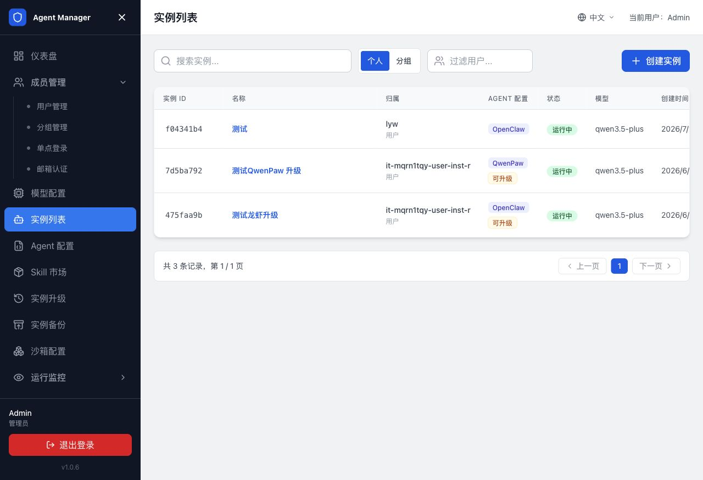
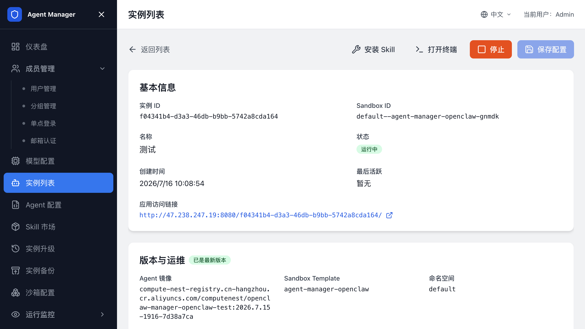
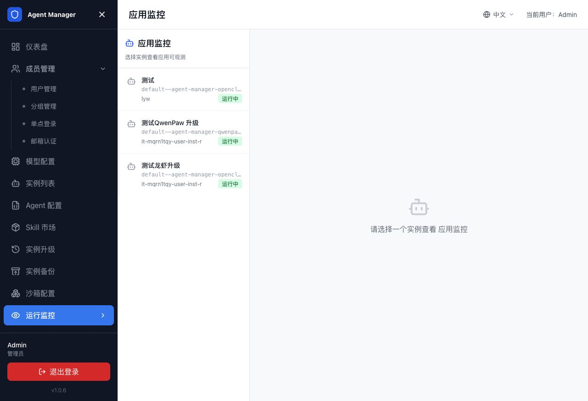

创建和管理 Agent 实例¶
本页面向平台管理员，介绍如何查看和管理 Agent 实例，以及如何确认用户侧实例是否正常运行。普通用户创建和使用自己的 Agent，请阅读用户指南。
实例列表¶
登录用户中心后，打开 实例列表 页面查看您创建的 Agent 实例。

列表支持：
| 功能 | 说明 |
|---|---|
| 搜索 | 按实例名称搜索。 |
| 创建 | 单击创建实例进入创建页。 |
| 分页 | 每页展示固定数量实例，可翻页查看。 |
| 操作 | 查看详情、启动、停止、删除。 |
管理员还可以在管理后台查看全部用户的实例，并按用户过滤。
查看管理员仪表盘¶
管理员登录后可以在仪表盘查看用户数、实例数、可用模型和近期实例。启用 AI 网关和日志服务后，页面还会展示请求数、Token 用量和用户消耗排行，并提供跳转 AI 网关控制台的入口。

管理员在实例列表中还可以按用户筛选实例、查看实例详情，以及在已配置集群访问权限时跳转到容器服务控制台查看 Pod。
查看实例详情¶
打开实例列表中的目标实例，可以查看实例 ID、Sandbox ID、E2B Host、运行状态、镜像和 Sandbox 模板，并通过“进入工作台”打开 Agent 原生界面。

查看应用监控¶
管理员可以在管理后台查看运行中实例的应用监控，用于确认 Agent 应用是否已接入可观测能力。

- 打开管理后台，进入
运行监控 -> 应用监控。 - 在左侧选择状态为“运行中”的实例。
- 等待监控面板加载；首次启用监控时，先在 Agent 应用中发起一次对话。
- 如需单独打开监控页面，单击“新窗口打开”。
如果页面提示选择实例，先选择运行中的实例。如果提示监控资源未就绪，等待资源创建完成后刷新。仍然没有数据时，检查 Agent 类型是否启用了应用监控，并确认模型提供商满足对应的监控要求。
创建 Agent 实例¶
管理员可以从管理后台为自己或指定用户创建实例。用户侧创建流程和可见范围不同，请勿将本页的管理后台入口发给普通用户。
- 打开用户中心。
- 进入
实例列表。 - 单击创建实例。
- 选择 Agent 配置，例如 OpenClaw、Hermes 或 QwenPaw。
- 填写实例名称。
- 选择已启用的 AI 模型。
- 按需选择消息渠道。
- 如果页面显示自定义变量，按字段说明填写变量值。
- 单击创建实例。
创建后，等待实例状态变为运行中。运行中表示沙箱环境、Agent 配置和 Agent 服务已经准备好，可以进入工作台。
填写渠道配置¶
如果创建实例时选择了消息渠道，页面会展开渠道配置区域。
常见字段包括：
| 字段 | 说明 |
|---|---|
| Client ID | 对应 IM 平台应用的客户端 ID。 |
| Client Secret | 对应 IM 平台应用的密钥。 |
| Webhook 或 Token | 由具体 Agent 类型和渠道模板决定。 |
请从对应开放平台获取这些值，例如飞书开放平台、钉钉开放平台、企业微信管理后台或 QQ 开放平台。
进入 Agent 工作台¶
- 打开实例详情页。
- 确认实例状态为运行中。
- 在基本信息区域单击“进入工作台”。
- 在新页面使用 Agent 原生界面。
工作台通过 Agent Manager 校验当前登录态和实例归属，再由 Manager 服务端访问 E2B Sandbox。
使用终端¶
如果当前 Agent 类型支持终端登录，实例详情页会提供终端入口。
- 打开实例详情页。
- 单击“打开终端”。
- 等待终端连接完成。
- 在终端中执行您的任务。
终端无法连接时，先确认实例仍处于运行中，并查看 常见问题与排障 中的工作台访问和实例创建失败章节。
上传文件¶
支持文件上传的 Agent 原生界面可一次选择多个文件。
- 进入 Agent 工作台。
- 单击上传文件。
- 选择一个或多个文件，或将文件拖拽到上传区域。
- 等待页面提示上传完成。
- 再继续执行 Agent 任务。
上传大文件或大量文件时，耗时受网络和实例环境影响。请等待页面确认上传完成后再关闭页面。
修改实例模型¶
- 打开实例详情页。
- 在模型配置区域选择新的 AI 模型。
- 确认页面出现已修改提示。
- 单击保存配置。
保存后，实例会按 Agent 类型的配置规则更新配置。部分 Agent 需要重启进程后新模型才生效，具体行为由 Agent 类型配置决定。
修改实例渠道¶
- 打开实例详情页。
- 在渠道配置区域选择渠道类型。
- 填写渠道所需字段。
- 只修改非密钥字段时，保留 Client Secret 为空。
- 单击保存配置。
Client Secret 输入框通常支持“留空则保持不变”。只有需要更换密钥时才填写新值。
停止实例¶
暂时不使用 Agent 时，停止实例以释放运行资源。
- 打开实例列表。
- 找到目标实例。
- 单击停止。
- 等待状态从停止中变为已停止。
停止后，实例配置和已保留的数据不会被删除。
重启实例¶
- 打开实例列表。
- 找到状态为已停止的实例。
- 单击启动。
- 等待状态从启动中变为运行中。
如果管理员修改了 SandboxSet，已运行实例通常需要停止再启动，才能应用新的沙箱配置。
删除实例¶
删除实例会移除实例记录并终止关联沙箱。删除前确认不再需要该实例中的数据。
- 打开实例列表。
- 找到目标实例。
- 单击删除。
- 在确认弹窗中确认删除。
删除操作不可恢复。
用户侧 Token 用量¶
如果管理员启用了 AI 网关和 Token 统计，用户实例列表顶部会显示 Token 用量概览，包括实例数量、今日 Token 用量和近 30 天 Token 用量。
进度条会根据使用率展示不同状态。达到限额后，用户的模型调用可能被限制。
备份¶
要保留实例数据或从备份创建新实例，请阅读 Agent 备份。
升级¶
要在更换镜像、启动命令或运行参数后迁移正在运行的 Sandbox，请阅读 Agent 升级。